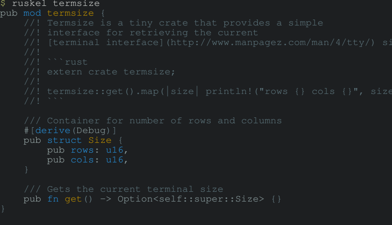
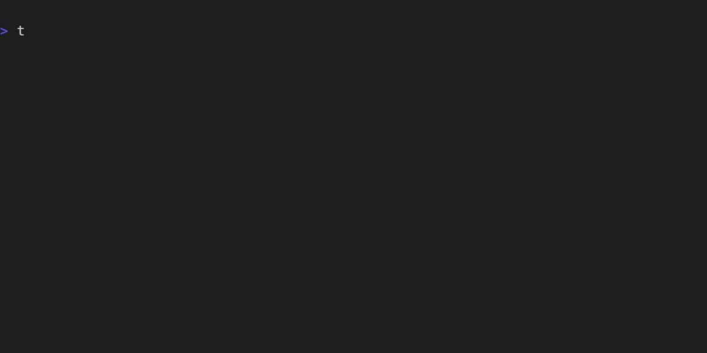

Context: Rust
Let's look at using Tenx with ruskel to provide library context for Rust.
Ruskel
Ruskel takes a Rust crate or module, and produces a skeleton of its public API, using syntactically correct Rust, all in one file. If the crate or module is not local, it will consult crates.io to download the source to produce the skeleton.
As an example, here's the output of the ruskel command line tool for the very tiny termsize library.

Note that the module structure is preserved with rust mod statements, and all structs, traits, functions in the public API are included along with their docs, but the implementation is elided.
Now this is very useufl as a quick, complete command-line reference to a module, but it really shines when used to provide complete module context to a model. Tenx's Ruskel integration means you can easily and quickly provide full module documentation for any library on crates.io.
Another handy trick is to add a Ruskel context for local crates to your config. Tenx itself does this to add libtenx by default, which means that we always have an up to date snapshot of our API while working.
Ruskel and Tenx
Let's do something a bit more meaty. Misanthropy is a complete set of bindings to the Anthropic API. It's a sister project of Tenx, as well as being developed entirely using Tenx. The Ruskel output for Misanthropy is too long to include here, but you can view it yourself with:
ruskel misanthropy
Our mission is to write a simple command line tool that uses Misanthropy to make a call to the Anthropic API. First, let's define our starting point - initially, we'll just have a simple placeholder command that prints "Hello word!", like this:
fn main() { println!("Hello, world!"); }
Now, we create a new session, and add the Misanthropy Ruskel skeleton to it.

Finally, we use the tenx code command to ask Tenx to write code within the current session. For good measure, we'll also use GPT4o for this, rather than the default Claude Sonnet.
And here's the result - the model has used the detailed API definition we provided it to create a perfectly valid interaction with Anthropic.
use misanthropy::{Anthropic, Content, Message, MessagesRequest, Role}; #[tokio::main] async fn main() { // Create the Anthropic client using the API key from the environment let client = Anthropic::from_env().expect("Failed to create Anthropic client"); // Create a new message let user_message = Message { role: Role::User, content: vec![Content::Text(misanthropy::Text { text: "How do you feel?".into(), cache_control: None, })], }; // Create a request with the message let request = MessagesRequest { model: misanthropy::DEFAULT_MODEL.into(), max_tokens: 100, messages: vec![user_message], system: Vec::new(), temperature: None, stream: false, tools: Vec::new(), tool_choice: misanthropy::ToolChoice::Auto, stop_sequences: Vec::new(), }; // Send the message request and capture the response match client.messages(&request).await { Ok(response) => { // Format and print the AI response println!("Claude: {}", response.format_content()); } Err(e) => { eprintln!("Failed to get a response: {:?}", e); } } }
For good measure, here's the output of a run of the resulting program:
Claude: As an AI language model, I don't have feelings in the same way that humans do. I don't experience emotions like happiness, sadness, or anger. My purpose is to provide information and assist users to the best of my abilities based on the data I have been trained on. I am here to help and support you, but I don't have the capacity for emotional states.